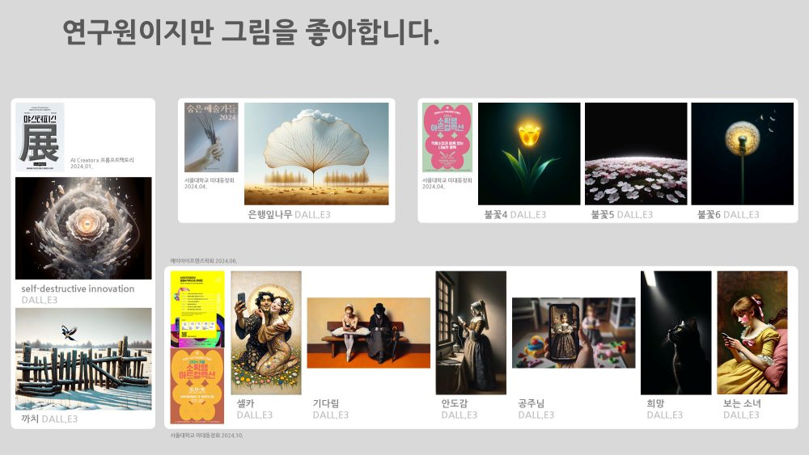
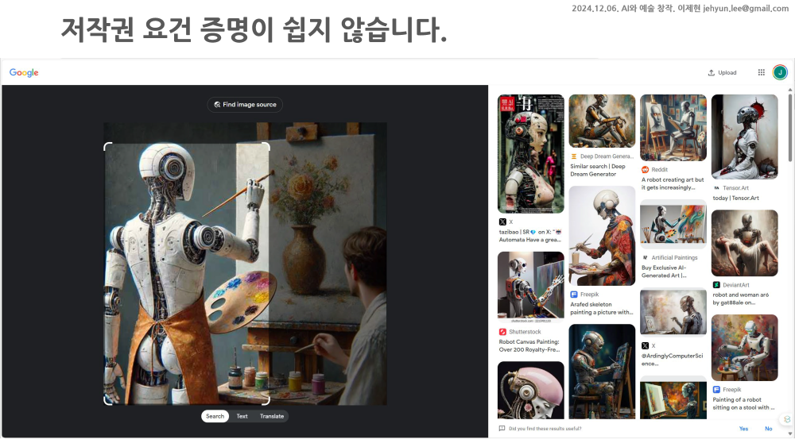

- 김재인 교수님의 주선으로 AI를 도구로 예술을 하는 분들과 같은 자리에 섰습니다.
- 내가 끼어도 되는 걸까 싶은 걱정과 이런 분들과 함께 한다는 기대가 공존했습니다.
- 말이 토론이었지 오가는 말씀 속에서 많이 배우고 시야가 크게 넒어지는 느낌을 받았습니다.
1. 발표 전
1.1. 김재인 교수님
김재인 교수님 블로그
youtube: 기술은 예술의 자원일까? 위협일까? 기술시대의 예술의 미래, 책으로 만나는 AI시대의 예술(김재인 교수)
yes24: AI 빅뱅
- 살면서 이런 사람들은 절대 만나지 않겠지 하는 부류의 분들은, 만나고서야 아 이런 분들이 있었지 싶습니다.
- 그 중 한 부류가 철학자.
- 이공계인의 숲에서 살며 간혹 그림그리는 분들과 역사 이야기 하는 분들을 기웃거리는 내게,
- 내게 철학자는 아무리 가까워도 데카르트보다 가깝기 힘들고 그 데카르트도 직교좌표계로 더 가깝습니다.
- 코드와 ppt를 들고 다니다 간혹 그림을 들고 다니던 SNS에서 김재인이라는 이름이 자주 보이기 시작했습니다.
- 철학자라고 하는데, 인공지능이야기를 하시고, 특히 인공지능이 그리는 그림이야기를 하십니다.
- 내가 즐겨보는 대상을 완전히 다른 면에서 보는 시각이 신선했고, 덕택에 들뢰즈 같은 이름도 알게 됐습니다.
- 이 분의 시야에도 제가 들어왔는지 저서에 추천사를 쓰는 인연도 맺게 됐네요.
- 멀리서 존재 정도를 인지하고 있다고 생각했는데, 행사에 참여해 달라는 요청을 주셨습니다.
- 감사하다는 마음과 재밌겠다는 생각에 이어 별 생각이 다 들었습니다.
- 내가 끼어도 되는 자리 맞나, 이런 분들이랑 이야기 한번 나눠보고 싶다, 어떤 분위기일까 등등.
- 흥미와 호기심, 그리고 처음 생긴 종류의 기회는 무조건 잡는다는 생각으로 나갔습니다.
1.2. 발표 준비
- 막상 발표하기로 하니 난감하더군요.
- 나 혼자 내 멋에 겨워서 노래도 부르고 춤도 출 수 있지만, 무대에 올라가려면 어느 정도 수준이 되지 않으면 민폐입니다.
- 그리고 무대의 수준은 자리에 앉아서 들어주시는 청중이 결정합니다.
- 모르긴 몰라도 예술에 몸담은 분들이 가득할 자리에서 공돌이가 취미로 하는 AI 그림 이야기는 깊기 힘듭니다.
- 생각을 바꿨습니다.
- 그림을 그리는 AI 이야기를 하면 되겠네.
- 예술 분야의 청중께는 AI에 가까운 프롬프트 이야기를 들려드리고,
- 프롬프트에
멋진 미래 도시같은 걸 넣고 있을 공돌이 분들께는 그림 이야기를 들려드리면 되겠네. - 그러면 내가 그림을 어떻게 그리는지말씀드리면 되겠네.
- 지난 6월 AAiCON2024 생성AI 아티스트 초대전에서 발표한 자료를 압축해서 앞쪽에 넣고,
- 뒷부분에는 내가 그리는 방식을 정리해서 발표하기로 했습니다.

2. 발표내용
2.1. 저에게 AI 그림은 취미입니다.
- 발표 제목을 “AI 그림이라는 진지한 취미”로 잡았습니다.
- 그림은 저에게 직업이 아니라 취미입니다.
- 인생, 가치관, 생계가 걸린 분들과는 입장이 많이 다릅니다.
- 고통을 인내하며 탐구하고 추구하는 대상이 아니라, 본업에서 전투를 치르고 돌아와 휴식하고 충전하는 곳입니다.
- 그래서, 여기에 에너지를 다 쏟아 저를 불태울 생각은 없습니다.
- 너무 진지한 고뇌의 대상으로 삼지 않습니다.
- 노트 한켠에 끄적이던 낙서가 도구만 바뀐 것입니다.
- 저는 단편적인 감정을 배출하고, 가끔 귀엽거나 웃긴다고 누군가 공감해주면 감사하지만 기대를 하는 경우는 적습니다.
- 굳이 이 이야기를 길게 하는 이유는,
- 카메라 셔터를 누르는 한 순간을 위해 몇 달을 준비하는 분들이 있고
- 한 폭의 그림을 완성하려고 내면의 고독을 고통스럽게 마주해서 잡아 올리는 분들이 있다는 걸 알기 때문입니다.
- 이런 분들과 함께 나란히 놓일 작품은 아닙니다.
2.2. 그렇다고 뇌를 비우고 그리지는 않습니다.
더에듀: 네덜란드 교사 노조, 교실 내 AI 사용 지침 명확화 요구
ZDNet Korea: 성능·역량보다 ‘에너지 효율성’ 더 중요해진다…내년 AI 시장 변화 ‘예고’
위클리오늘: 서울 성북 VIP 동물병원서 반려동물 사망… 보호자 “병원의 불성실한 치료 때문” 진실은?
SBS: 챗GPT로 수능 국어 풀었더니 97점…AI, 만점 도전하나
- 아무래도 좋으니 예쁜거 나와라 뚝딱하는 마음으로 그리지는 않습니다.
- 내 감정을 담는 것이 목적이라면, 내 감정을 최대한 잘 표현하려고 노력합니다.
- 사람들에게 무슨 말을 걸고 싶다면, 그 목소리가 잘 들리게 하려고 노력합니다.
- 깊은 철학은 없지만 얕으면 얕은대로 정확하게 전달하고 싶다는 뜻입니다.
- 그래서 가장 피하는 그림이 아무나 다 그리는 그림입니다.
- 언젠가부터 신문기사에 AI가 그린 삽화가 자주 보입니다.
- 특히 DALL.E가 그린 그림들이 많은데, 특유의 푸른 빛과 번들거림이 너무 싫습니다.
- AI 그림이라는 걸 알리려고 일부러 넣은건가 의심될 정도로 부자연스럽습니다.
- 좋은 그림을 전달하고 싶다는 생각이 있다면, 이런 색감은 절대로 쓰지 않을 것 같습니다.
- 그리고, AI 그림이 유행함과 동시에 젊은 여성들의 그림들이 곳곳에 걸립니다.
- 이런 그림을 그리는 분들은 무언가 본인만의 이유가 있으실 것이라 생각하고 존중하지만,
- 적어도 저는 별로 그리고 싶지 않습니다.
- 이유는 그냥, 이런 그림들이 이미 충분히 많아서입니다.
- 위가 의도만 앞서서 촌스러운 그림이라면
- 아래는 적어도 저로서는 의도를 알 수 없는 그림입니다.
- 그림을 그리신 분들에게는 의도가 있겠습니다만 적어도 제겐 저런 그림을 그릴 의도가 떠오르지 않습니다.
- 전달하고 싶거나 공감받고 싶은 마음, 표현하고 싶은 감정을 시각적으로 표현하고자 합니다.
2.3. 선을 그었습니다.
2.3.1. 즐거움을 잃지 않도록 선을 그었습니다.
- 그림이라는 취미는 시간이 많이 듭니다.
- 손으로 그리건 핸드폰으로 그리건, 털 하나 점 하나에 예민한데, 수천번 터치를 해야 비로소 형체가 드러납니다.
- 문제는 현업에 시간을 들이다 보면 그림에 들일 시간이 극히 제한된다는 점입니다.
- 생성 AI 그림도 마찬가지입니다.
- DALL.E2부터 생성 AI 그림을 수정할 수 있는 기능이 생겼습니다.
- inpainting으로 세부를 수정할 수 있고, outpainting으로 영역을 확장할 수 있습니다.
- Stable Diffusion 계열에는 밑그림을 이용할 수 있는 ControlNet이 나와 있습니다.
- 이런 기능들을 사용하면 머리 속 그림에 훨씬 더 가까워질 수 있습니다.
- 그러나 끝이 없다는 것이 제겐 문제가 됩니다. 시간이 끝없이 드니까요.
- 시간에 쫓기면 의무감이 되고, 즐거움을 잃어버리는 경험은 충분히 했습니다.
- 그래서 즐거움을 잃지 않도록 프롬프트로만 그린다는 선을 그었습니다.
- 같은 이유로 음악과 동영상도 만들지 않습니다.
- 관리를 하지 않기 위해 설치형 AI 도구도 사용하지 않습니다.
2.3.2. 나를 드러낼 수 있도록 선을 한번 더 그었습니다.
- 생성 AI의 피할 수 없는 특징이 둘 있습니다.
- 하나는 학습한 데이터로부터 결과물이 만들어진다는 점이고,
- 또 하나는 랜덤한 결과물이 나온다는 점입니다.
- 이 두 특징으로 인해 생성 AI 그림을 대하는 태도가 나뉩니다.
- 원래 그림을 그리지 않던 분들은 생성 AI 그림을 멋지다고 좋아하고,
- 원래 그림을 그리던 분들은 마음대로 되지 않는다고 답답해 합니다.
- 그림을 그리기 전에 떠오른 이미지가 있는가, 그 이미지가 충실히 구현되는가의 차이라 생각됩니다.
- 잘 모르는 분야일수록 AI의 결과물에 불만이 없어지는 것은 분야와 무관하게 일반적인 현상입니다.
- 그리고 이런 분들은 같은 AI를 쓰면서도 좋은 결과를 얻기 위해 노력하는 분들이 있다는 것을 상상하기 어렵습니다.
- 프롬프트 대충 넣으면 나오는 거 아니야?라는 분도 있고,
- 베낄 이미지 넣고 그리라고 하면 금방 나오는데?라는 분도 있습니다.
- 후처리를 하면서 시간을 많이 들이기는 싫지만, 대충 그리고 싶다는 뜻은 아닙니다.
- 머리 속에 있는 영상을 글을 통해서 최대한 재현하는 재미를 느끼고자 합니다.
- 생성 AI를 사용하지만 남의 그림을 베끼기 싫고, 운을 최소화하고 싶습니다.
- 일반적인 방식으로 그림을 배우는 사람들도 기존 작품들의 영향을 받는 점을 인정합니다.
- 인간 화가들도 물감을 뿌리거나 던져서 그림을 그리듯 일부 운에 맡기는 영역이 있습니다.
- 기존 데이터와 운의 영향은 딱 여기까지만 받고 싶습니다.
- 사전 이미지를 입력하지 않습니다: 대놓고 베끼겠다는 선언으로 느껴집니다.
- 작가 이름을 입력하지 않습니다: 난 모르겠고 이런 스타일로 해달라는 말 같습니다.
- 장르 입력은 최소화합니다: 이 정도 영향은 받을 수 있다고 생각하지만, 가급적 피합니다.
- 대신 최대한 자세하게 프롬프트를 넣습니다.
- 제가 사용하는 ChatGPT에 탑재된 DALL.E는 100 단어 가량을 입력받게 되어 있습니다.
- 100 단어를 제가 채우지 않으면 자기가 알아서 상상해버립니다.
- 절대로 GPT나 클로드에게 프롬프트를 만들어 달라고 하지 않습니다.
- 프롬프팅도 영어로 합니다.
- 시스템 프롬프트를 열어보면 영어가 아니면 영어로 번역하라고 합니다.
- 이 과정에서 뉘앙스가 묘하게 달라지는 일을 많이 겪었습니다.
- 이 표현을 영어로 어떻게 하지? 하고 찾아보는 과정도 하나의 재미입니다.
- seed number에 붙는 랜덤성은 어쩔 수 없습니다.
- 아쉽긴 하지만 이 정도는 감수하기로 합니다.
- 배당된 seed number를 유지할 수 있다는 점을 위안으로 삼습니다.
2.3.3. 생각이나 감정을 시각화하고, 이를 말로 바꿉니다.
- 예를 들면 이런 식입니다.
- 숨이 막힐 만큼 답답한 날이 있었습니다.
- 그래도 어딘가 보이는 실낱같은 희망이 있어서 포기하지 않을 수 있었습니다.
- 이를 어둠 속에서 빛을 바라보는 고양이로 시각화했습니다.
- 자세한 설정들을 담아 프롬프트를 충분히 길게 작성해서 입력하며 그림을 얻습니다.
- 원하는 그림을 기다리며 계속 새로 만들면서 반영이 안되는 구상이 있는지 확인합니다.
- 프롬프트를 조금씩 바꿔가면서 원하는 그림으로 다가가다가, 최적의 그림을 선택합니다.
- 손그림과는 달리 랜덤이 작용되기 때문에,
- 그리고 학습하지 않은 패턴은 구현되지 않기 때문에 내 머리 속이 100% 옮겨지기는 매우 어렵습니다.
- AI가 내놓는 결과물 중에서 고르는, 일종의 타협이 필요하기도 하고
- AI가 뭘 그릴 수 있을지 파악하고 그 안에서 나올 수 있는 결과를 요구하는 이해가 필요하기도 합니다.
- 화가가 붓과 물감, 캔버스, 종이를 파악하는 과정과 비슷하다고 생각합니다.
2.4. 저작권 문제
- 생성 AI 그림 뿐 아니라 글, 음악, 영화에 대한 저작권 이슈가 적지 않습니다.
- 생성 AI가 학습한 이미지들에 대한 저작권, 생성 AI 로 만들어진 그림에 대한 저작권이 모두 이슈이고
- 생성 AI가 학습한 이미지들에 대해서는 손해배상 소송이,
- 생성 AI가 생성한 이미지들에 대해서는 저작권 청구 소송이 이어지고 있습니다.
- 개인적으로는 생성 AI가 학습한 이미지들에 대한 저작권은 존중되어야 하며
- 생성 AI가 생성한 이미지들도 일부 저작권이 인정될 수 있다고 주장하는 바입니다.
- 저작권의 성립 요건에 노동력 투입이 배제되어 있다는 것이 첫번째 이유,
- 독창성과 사상이나 감정의 명시적 표현이 포함되어 있다는 것이 두번째 이유입니다.
- 다만 목소리를 크게 내기는 아직 조심스럽습니다.
- 생성 AI에 남의 이미지를 업로드해서 만들어진 그림은 독창성을 주장하기 쉽지 않을 것입니다.
- 남이 만들어준 프롬프트, 특히 AI가 만들어 준 프롬프트를 넣어서 만들어진 그림도 마찬가지입니다.
- 프롬프트에 시각적인 내용이 없다면, 사상이나 감정을 명시적으로 표현했다고 주장하기 어려울 것입니다.
- 하지만 고심해서 넣은 프롬프트로 그린 그림과 대충 넣은 그림은 구분할 수 없습니다.
- 그림에 담긴 의도에 대한 작가의 설명만이 둘을 가를 수 있습니다. 이 경우 좋은 조수를 부린다고 볼 수 있습니다.
- 의도마저 AI에게 설명하라고 하고 이를 읊을 수 있겠지만, 자기 생각이 없다면 여러 작품에 걸친 일관성을 확보하기는 어려울 겁니다.
- 그러나, 나는 독창적이라고 생각했지만 결과를 보니 무수한 유사작들이 있다면 독창성을 주장하기 어려울 것입니다.
- 거꾸로 남들이 만든 LoRA를 조합해서 나만의 스타일을 만들었다면 독창성을 확보할 수 있다고 생각합니다.
- 말도 안되는 수식이나 랜덤한 글자를 넣어도 그림은 나옵니다. 이런 경우 전위예술에 가까울 수 있다고 생각합니다.
- 이런 복잡한 사연들 때문에 저작권을 일률적으로 적용하기는 몹시 어렵겠다는 생각이 듭니다.

3. 그럼에도 불구하고
- 제가 그림을 그리는 목적은 돈을 벌기 위한 것이 아닙니다.
- 그렇다고 심오한 예술적 가치를 추구하기 위한 것도 아닙니다.
- 저작권에 대한 생각을 가끔 하기는 하지만, 그럴듯한 안을 언제까지 작성해서 제출해야 하는 입장에 있지 않습니다.
- 제게 그림은 취미입니다.
- 누가 시키지 않아도 스스로 하면서 재미를 느끼면 그 뿐입니다.
- 가끔 전시회에 참여해 뽐내고 싶은 유치한 마음을 실현하기도 하고,
- 울적한 날 우울을 떨치고 쌓인 스트레스를 털어버리며 지인들과 함께 한바탕 웃을 수 있는 소재가 되면 그걸로 족합니다.
- 제가 그림을 그릴 때 가장 느끼고 싶은 감정은 자유로움입니다.
- 제 그림을 보아 주는 분들이 가낭 느꼈으면 하는 감정은 어떤 형태건 즐거움입니다.
- 예술은 이래야 한다, 저래야 한다는 잣대와 무관하게 제가 좋으면 그만인 방식,
- 저 혼자 진지하며 만족하는 방식으로 시간을 보내는 것이 제가 그림을 그리는 목적입니다.
- 다른 분들도 각자 자신의 목적으로 그림을 그리고, 즐기고 계시리라 믿습니다.
- 제가 동의할 수 없는 관점, 저를 동의할 수 없는 관점도 있겠습니다만, 괜찮습니다.
- 이 그림은 이래야 한다거나 AI 그림은 이래야 한다고 주장하는 글이 아닌, 나는 이렇다는 글이기 때문입니다.
- 다만 제가 그림에서 즐거움을 느끼듯, 다른 분들도 다른 형태로라도 그림에서 즐거움을 느끼면 좋겠다는 정도의 소망을 가져봅니다.
- 발표자료를 공유드립니다 (다운로드)